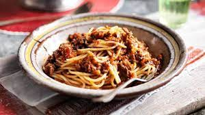

Sphagetti Bolognese

Homemade spaghetti bolognese, slow cooked with a rich flavour (1hr30min cook time)
Ingredients
- Spaghetti
- Pork mince
- Beef Mince
- Onion
- Celery
- Carrots
- Tomato pureé
- Rosemary
- Milk
- Chicken stock
- Red wine
Instructions
- Finely chop your onions, celery and carrots. Add them to the pot with butter and oil and cook for 15 mins.
- Add you mince, season and brown. once browned and in red wine and cook for a further 15 mins
- Add chicken stock, tomato pureé and rosemary. Cook on low for 45 mins.
- Cook pasta in salted water.
- Add half a cup of milk to the pot and mix, cook for a further 10 mins.
- Serve up with pasta and cracked black pepper. Sprinkle some parmesan if you like cheese